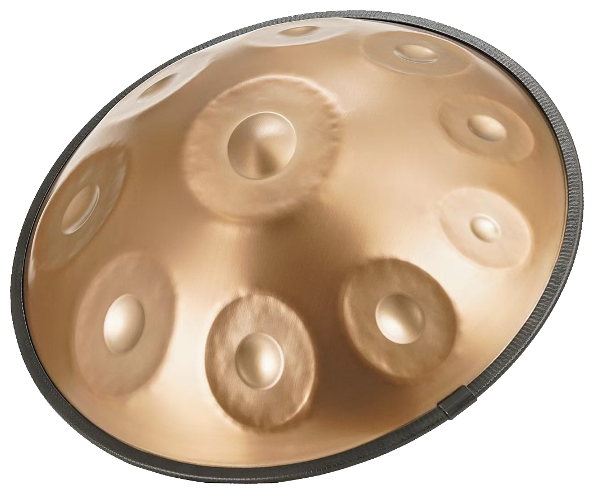
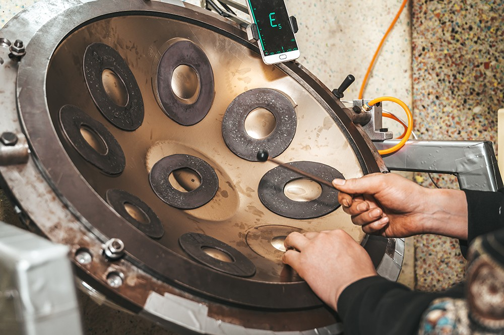
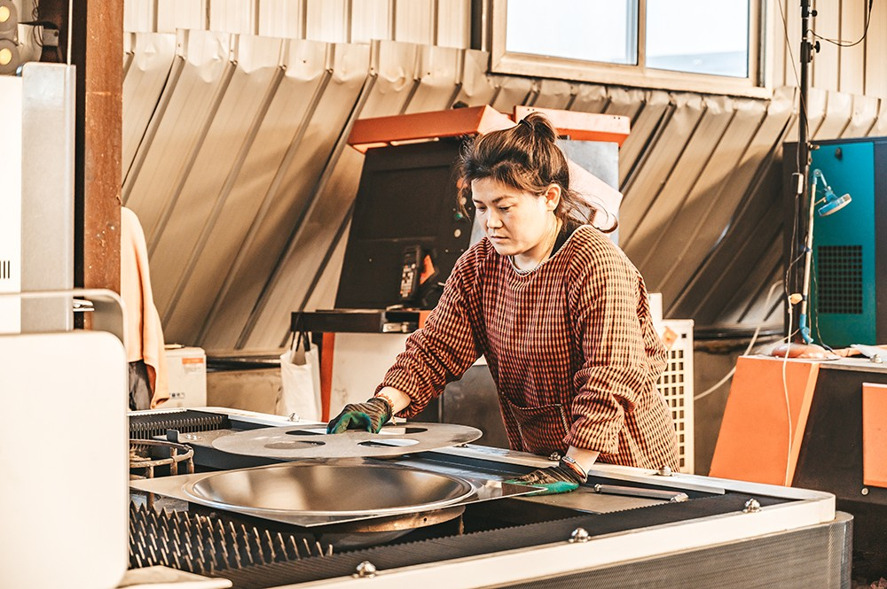
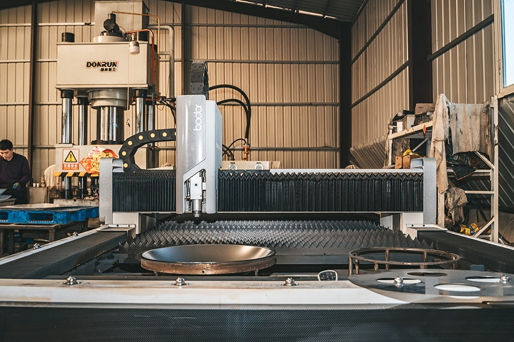
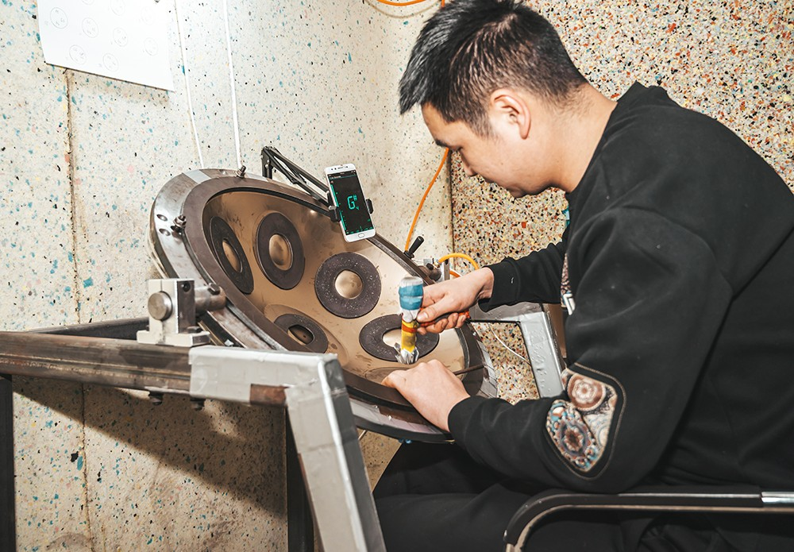
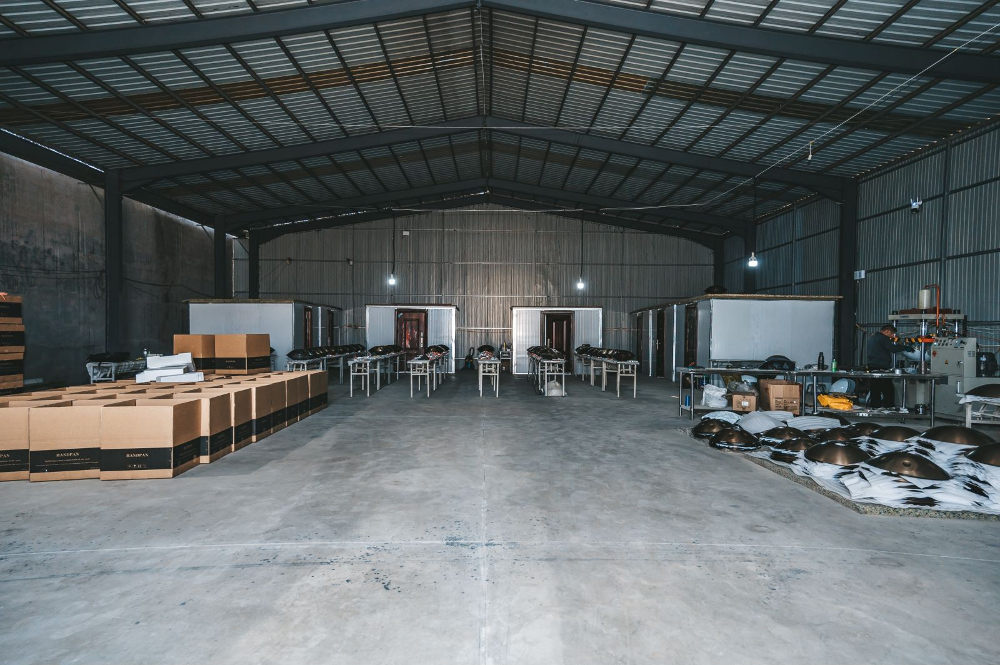

精选钢材
采用适合手碟振动结构的钢材，并根据目标音色进行热处理与表面保护。

Craft
真实工坊、真实调音流程。我们把金属成型、音区校准、表面处理与出厂检查放在同一套生产标准里， 让每一只手碟都拥有可复现的音准和触感。
采用适合手碟振动结构的钢材，并根据目标音色进行热处理与表面保护。
每个音位都经过反复敲制、修正和应力释放，让触感与响应保持均衡。
基础频率、八度音和泛音逐项校准，确保独奏和合奏时都有干净的音准。
出厂前完成外观、音准、共振、配件和包装检查，适配长途运输。
Atelier
从壳体成型到逐音调校，每一道工序都由经验工匠完成，并通过设备与人工听感双重确认。





Scales
可按你的市场、演奏风格或品牌定位推荐音阶组合。
温暖、流行、上手快，适合初学者、疗愈音乐和即兴演奏。
D3 / A3 Bb3 C4 D4 E4 F4 G4 A4空灵、叙事感强，适合户外演奏、冥想空间和短视频内容。
D3 / A3 C4 D4 E4 F4 G4 A4 C5明亮又沉静，音程关系开放，适合进阶玩家与舞台演出。
E3 / G3 B3 C4 D4 E4 F#4 G4 B4Custom
你可以选择音阶、音位数量、频率、颜色、表面纹理、Logo 铭牌、外箱与配件。 我们也能为新渠道提供样品测试和批量交付建议。
Inquiry
发送目标音阶、数量、交付国家和品牌需求，我们会为你准备报价与生产建议。